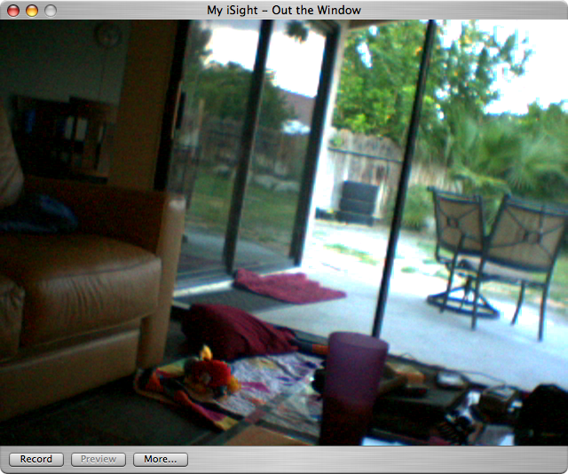
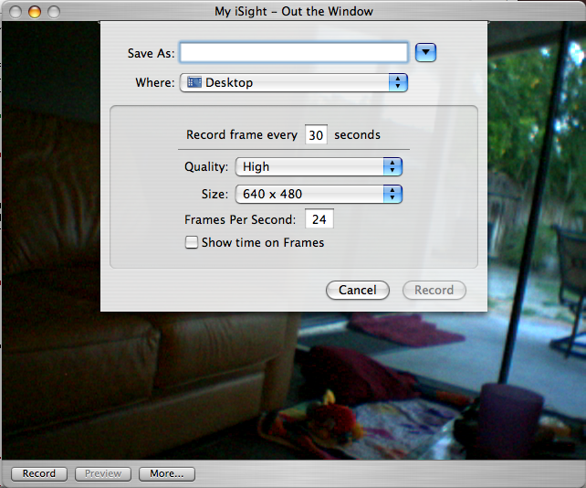

Using Gawker to Record a Movie
Creating a time-lapse movie is quick and easy with Gawker. First, enable the camera you want to record and open it. If you do not know how to do this, refer to Gawker Basics. Once you open your camera, you should see a window like the one below.

The camera window shows the current image of the camera, along with "Record" and "Preview" buttons.
It should be noted that your camera will appear jerky in Gawker. This is intentional. Since Gawker will only need a frame every handful of seconds, pulling frames off the iSight more frequently would cause excessive CPU usage.

To begin recording:
- Click the "Record" button to bring down the Record sheet.
- Choose the file you would like to save the movie to and where that file should be saved. Note: You can specify a default location in Gawker's "Preferences" panel.
- If available, choose how often you would like to record a frame from the camera. This option is only available when recording local iSight cameras since remote cameras determine when a new frame is available.
- Choose the quality and size of your output movie.
- Choose the Frames Per Second of the output movie.
- Choose whether or not to put time information at the bottom of each frame. Note: The font for this timestamp can be selected and previewed in Gawker's "Preferences" panel.
- Hit Record! Or if you've changed your mind, click Cancel.
Once you've begun recording, you can preview your movie by clicking "Preview". Your camera will have a red dot next to the enable/disable button to let you know that it is recording.

To stop recording, click the "Stop" button in the camera window and the movie will be saved to the location you specified. That's all there is to it!
See also
Gawker Basics
Using Gawker to Share your Camera
Camera Options in Gawker
Using Gawker to Combine Cameras